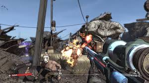

Borderlands
Borderlands is an action role-playing first-person shooter video game that was developed by Gearbox Software for PlayStation 3, Xbox 360, Microsoft Windows and Mac OS X. It is the first game in the Borderlands series.
It was first revealed in the September 2007 issue of Game Informer magazine. The console versions of the game were released in North America on October 20, 2009, and were released in PAL countries on October 23. The console version release for the Japanese market was made available on February 25, 2010. The Windows version was released on October 26 for North America and then on October 29 internationally. The Mac OS X version of the game was released on December 3, 2010 by Feral Interactive.
A sequel, Borderlands 2, was released on September 18, 2012 in the U.S. and on September 21 in other countries.
Gameplay
Borderlands includes character-building elements found in role-playing games, leading Gearbox to call the game a "role-playing shooter". At the start of the game, players select one of four characters, each with a unique special skill and with proficiencies with certain weapons. The four characters are: Roland the Soldier, Mordecai the Hunter, Lilith the Siren, and Brick, the Berserker. From then on, players take on missions assigned through non-player characters or from bounty boards, each typically rewarding the player with experience points, money, and sometimes a reward item. Players earn experience by killing both human and non-human foes and completing in-game challenges (such as getting a certain number of kills using a specific type of weapon). As they gain levels from experience growth, players can then allocate skill points into a skill tree that features three distinct specializations of the base character; for example, Mordecai can become specialized in sniping, gunslinging with revolvers, or using his pet Bloodwing to assist in kills and health boosting. Players can distribute points among any of the specializations, and can also spend a small amount of in-game money to redistribute their skill points.
|
Example of gameplay seen in Borderlands.
|
|

|
Players start the game with the ability to equip two weapons but later gain up to four weapon slots, as well as slots for an energy shield, a grenade modification, and a class modification. Items collected can be sold back at vendors for money that then can be used to buy better items. One of the key features of Borderlands is the randomly generated weapons and items created either as dropped by enemies, found in storage chests about the game, on the ground, sold at vendors in the game, or as quest reward items. The game uses a "Procedural Content Creation System" to create these weapons and items, which can alter their firepower, rate of fire, and accuracy, add in elemental effects such as a chance to set foes on fire or cover them in burning acid, and at rare times other special bonuses such as regenerating the player's ammo. A color-coded scale is used to indicate the rarity of the weapon or item. It was estimated that the random system could generate over 17 million variations of weapons, but actually only resulted in a little over 3,500,000. The Procedural system is also used to create the characteristic of random enemies that the player may face. This allows for enemies of the same species to have widely varying attacks: for example, variations of "spiderants" in the game could leap around and would jump onto players' faces, while another variant can roll up into a ball and attack people, depending on the content generator.
When in combat, the player can take damage if their shield is depleted, affecting their health. If they lose all their health, they must either wait to be revived by another player or attempt to kill an enemy to achieve a "second wind", or otherwise will be regenerated back at the last "New-U" station that they passed, losing a 'ratio-appropriate' percentage of their money in the process. Players quickly gain access to two-passenger vehicles, and can engage in vehicular combat with other enemies. Eventually, a system of fast transit points between the game world is available to the player; until then, players must walk or drive between areas to get around.
The game can be played alone, but also supports two-player cooperative play through split-screen (on consoles), and up to four players playing co-operatively online or over LAN. The game follows the progress of the host player, rewarding the other active players for completion of quests for their characters. If the other players are doing the same quests in their campaign, the completed quests remain the same in their campaign as well as the host's. When more players are present, the game alters the statistics of the generated enemies, balancing the game due to the larger number of players. Players can take part in one-on-one duels anywhere in the game world, or can visit arenas in the game world to participate in free-for-all, 2-on-2 or 3-on-1 combat battles with their fellow players. The original title as shipped for Microsoft Windows used GameSpy servers for multiplayer modes; as a result of GameSpy's shutdown in 2013, 2K Games is working on patching the game and moving the servers to Steam, and providing Steam-versions of the game for those that purchased the title through retail channels.